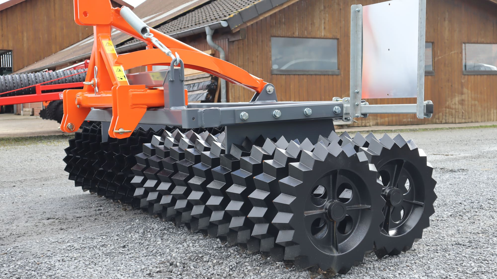

Frontanbau
Frontanbau-Geräte
Zur agroXX-Linie gehören Geräte für den Frontanbau: der STAR CRACKER und die MAXXIMUS-Walze. Beide werden vorne am Schlepper angebaut.
Ausstattung
- STAR CRACKER
- agroXX Frontanbaugerät mit Sternringen
- MAXXIMUS
- agroXX Cambridge-Frontpacker mit Lenkbock und 525-mm-Ringen
- Frontpacker 6,0 m
- agroXX FRONTPACKER in 6,0 m Arbeitsbreite
Frontanbau
STAR CRACKER
Das agroXX Frontanbaugerät STAR CRACKER mit Sternringen und Dreipunktanbau.


Frontanbau
MAXXIMUS Frontwalze
Die agroXX-Walze MAXXIMUS für den Frontanbau, mit Dreipunktanbau und Stützfüßen.


Für den Frontanbau gebaut.
Baugrößen und Ausführungen
MAXXIMUS und FRONTPACKER
agroXX Frontpacker für den Frontanbau.
| Modell | Ausführung | Eckdaten |
|---|---|---|
| agroXX FRONTPACKER 6,0 m | Hydro mit Lenkbock · 700-mm-Ringe | Frontpacker · Arbeitsbreite 6,0 m · Ø 700 mm · klappbar, Beleuchtung |
| agroXX MAXXIMUS Cambridge-Frontpacker 3,0 m | mit Lenkbock · 525-mm-Ringe | Frontpacker · Arbeitsbreite 3,0 m · Ø 525 mm |
Angaben ohne Gewähr. Aktuelle Verfügbarkeit und Preise erfragen Sie bitte direkt bei uns.
Beratung direkt vom Händler
Rufen Sie an, schreiben Sie per WhatsApp oder E-Mail. Wir sprechen mit Ihnen über Maschine, Ausstattung und Lieferung.